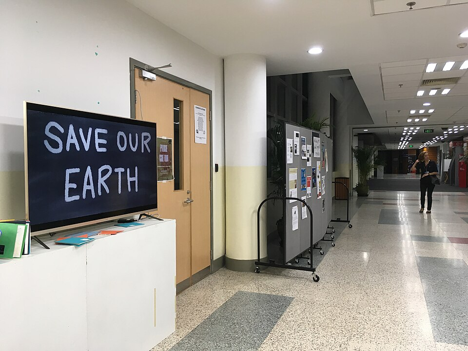

상하이 아메리칸 스쿨 푸둥 캠퍼스 복도 · 사진: Snowstorm417 / Wikimedia Commons, CC BY-SA 4.0
상하이 아메리칸 스쿨(Shanghai American School) — 상하이 미국식, 푸시·푸둥 두 캠퍼스와 IB·AP 준비법
1. 상하이 아메리칸 스쿨은 어떤 학교인가
상하이 아메리칸 스쿨은 1912년 개교로 알려진, 상하이에서 역사가 긴 미국식 국제학교입니다.
| 항목 | 내용 |
|---|---|
| 개교 | 1912년으로 알려져 있음 |
| 캠퍼스 | 푸시(민항 지역)와 푸둥 두 곳 |
| 교육과정 | 미국식 바탕 + 고등에서 IB 디플로마·AP 운영 |
| 수업 언어 | 영어 |
| 헷갈리기 쉬운 점 | 싱가포르 아메리칸 스쿨(SAS)과 약칭만 같은 다른 학교 |
※ 개설 과목·학년 요건·모집 일정은 해마다 달라질 수 있으니 학교 요강을 직접 확인하세요. 학비·정원 같은 변동 수치는 이 글에서 다루지 않습니다.
2. 한국(주재원) 학생이 겪는 어려움
· 캠퍼스 선택이 곧 생활권 선택. 상하이는 도시가 넓어 푸시와 푸둥 사이 이동이 만만치 않습니다. 집을 먼저 구하고 학교를 맞출지, 학교를 먼저 정하고 집을 구할지를 발령 초기에 정해야 통학이 꼬이지 않습니다.
· 미국식 영어 = 쓰기 과제의 연속. 영어 수업은 소설·논픽션을 읽고 분석 에세이를 쓰는 비중이 큽니다. 회화가 되어도 주장과 근거를 세우는 글이 없으면 점수가 안 나옵니다.
· 영어로 된 수학. 한국에서 선행한 학생도 알지브라 워드 프라블럼의 영어 지문과 풀이 과정 서술(show your work)에서 감점을 받습니다.
· 고등의 IB냐 AP냐. 두 길을 모두 운영하는 학교는 선택지가 넓은 만큼, G9~G10 무렵에 목표 대학 방향을 미리 잡아 두는 것이 좋습니다.
3. 그래서 이렇게 준비합니다
🗺️ 발령 초기 — 순서부터
① 학교 요강에서 학년 배정 기준(생년·학기) 확인 → ② 캠퍼스와 거주 후보 지역 함께 결정 → ③ 입학 평가에 대비해 영어 리딩·쓰기와 영어 수학 용어를 먼저 점검. 이 순서를 지키면 도착 후 적응 기간이 크게 줄어듭니다. (→ 주재원 자녀 입학 대비 · 주재원 입학 영어과외)
📖 영어과외 — 분석 에세이
미국식 영어의 핵심은 텍스트 근거를 인용해 주장하는 에세이입니다. 주장 → 근거(인용) → 분석 → 연결의 뼈대를 잡고, 학교에서 받은 루브릭(채점 기준)을 기준으로 첨삭합니다. (→ 국제학교 영어 공부법)
📐 수학과외 — 영어 알지브라와 서술
영어 용어(slope, expression, inequality 등)를 아는 개념에 연결하고, 풀이를 영어 문장으로 쓰는 연습을 함께 합니다. 고등에서 IB 수학(AA·AI)이나 AP Precalculus·Calculus로 가려면 알지브라 기초가 단단해야 합니다. (→ 알지브라 공부법 · AP 과목 선택 · IB DP 점수)
4. 상하이의 강점 — 시차 1시간 화상과외
상하이는 한국과 시차가 1시간이라 방과 후 실시간 화상 1:1이 편합니다. 현지에서 한국어로 개념을 정리해 줄 강사를 찾기 어려운 경우가 많아, 아이의 실제 과제·시험지를 화면에 띄워 영어 에세이와 영어 수학을 이어서 관리하는 방식이 잘 맞습니다. 상하이의 다른 국제학교 이야기는 상하이 국제학교 과외와 상하이 학원 찾기에 정리했습니다.
정리
상하이 아메리칸 스쿨은 1912년 개교로 알려진 상하이의 미국식 국제학교로, 푸시·푸둥 두 캠퍼스와 고등의 IB 디플로마·AP가 특징입니다. ① 캠퍼스는 생활권과 함께 ② 영어는 분석 에세이 ③ 수학은 영어 알지브라와 서술 ④ 고등은 IB/AP 방향을 일찍 — 이 넷을 시차 1시간 화상과외로 관리하는 것이 핵심입니다. 30분 무료 상담으로 우리 아이 단계부터 점검해 보세요.